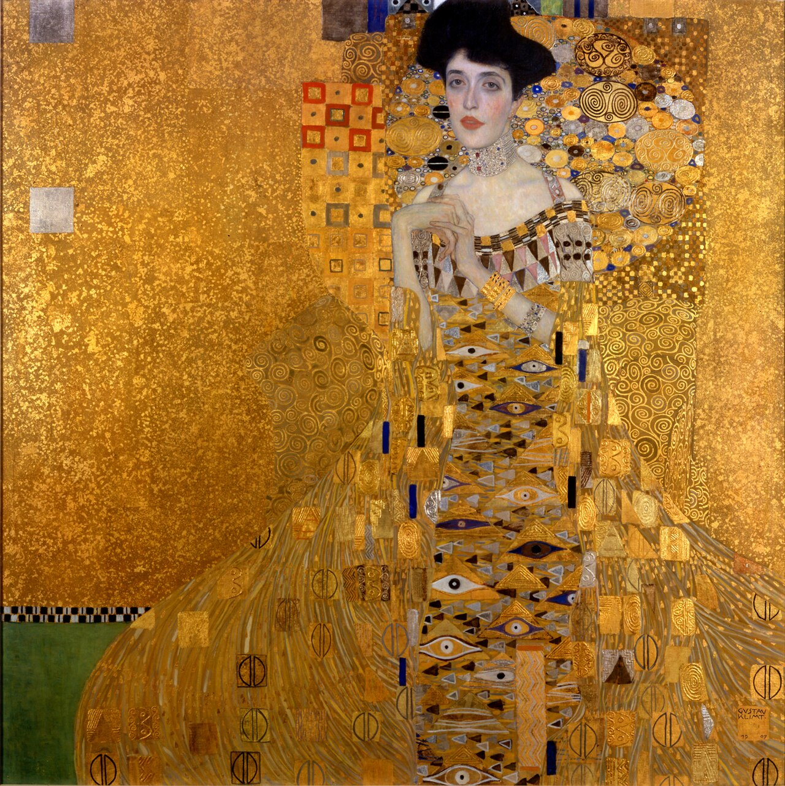
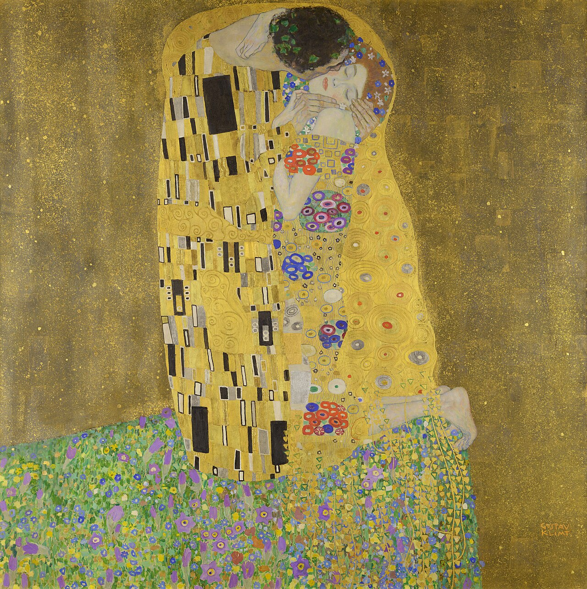
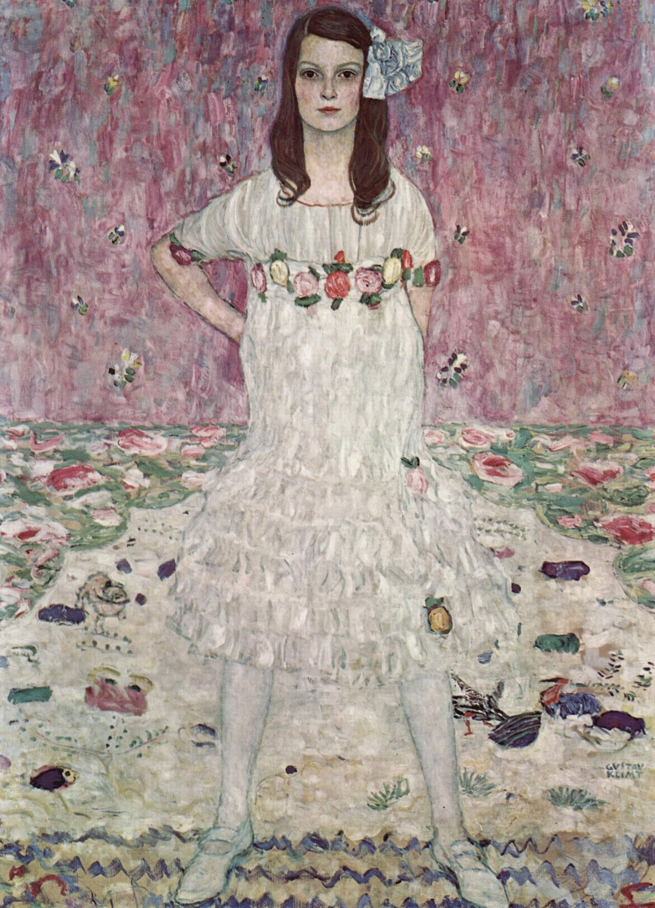
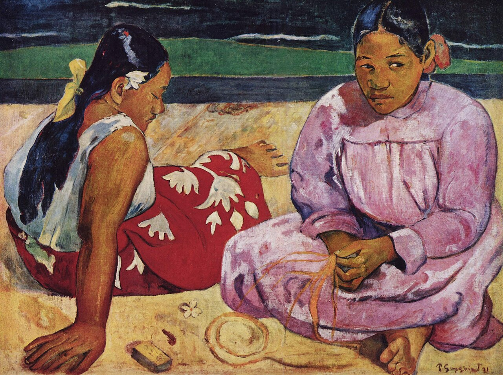

Portrait of Adele Bloch-Bauer I
Gustav Klimt
1907 • Golden PhaseKnown as 'The Woman in Gold', an opulent synthesis of Egyptian motifs and Viennese society splendor.
View in Collection →
By Gustav Klimt (Austrian, 1862–1918)
Year of Creation: 1907–1908
| Medium | Oil and gold leaf on canvas |
|---|---|
| Dimensions | 180 cm × 180 cm (71 in × 71 in) • Perfect Square |
| Current Collection | Österreichische Galerie Belvedere, Vienna, Austria |
| Artistic Movement | Vienna Secession / Symbolism / Art Nouveau (Jugendstil) |
| Creative Phase | Klimt's "Golden Phase" (inspired by Byzantine mosaics in Ravenna) |
Narrated curatorial commentary (approx. 2 min)
Created between 1907 and 1908 at the summit of Gustav Klimt's celebrated "Golden Phase", The Kiss is an intoxicating celebration of romantic union, erotic symbolism, and decorative splendor. Painted on a monumental square canvas, the artwork was acquired directly by the Austrian state before the exhibition even closed.
The composition portrays an embracing couple poised at the precipice of a lush meadow carpeted in delicate wildflowers. Their figures are almost entirely swallowed by sumptuous robes richly illuminated with genuine gold, silver, and platinum leaf. Klimt distinguished the lovers' identities through contrasting geometric ornamentation: sharp, masculine black and grey rectangles for the man, and soft, circular floral discs for the woman.
Drawing deep inspiration from the gilded Byzantine mosaics of the Basilica of San Vitale in Ravenna, Klimt synthesized classical decorative traditions with modern psychological sensuality. The shimmering gold backdrop detaches the lovers from earthly space and time, immortalizing their embrace within a sacred aura of eternal devotion.
Experience corresponding masterpieces featuring decorative gold leaf, intricate linear rhythm, and visionary allegories.

Gustav Klimt
1907 • Golden PhaseKnown as 'The Woman in Gold', an opulent synthesis of Egyptian motifs and Viennese society splendor.
View in Collection →
Gustav Klimt
1909 • SymbolismA swirling frieze created for the Stoclet Palace in Brussels symbolizing wisdom, infinity, and organic continuity.
View in Collection →
Paul Gauguin
1889 • Synthetism / SymbolismA foundational Symbolist work using pure flat blocks of yellow and red to evoke profound spiritual devotion in Brittany.
View in Collection →